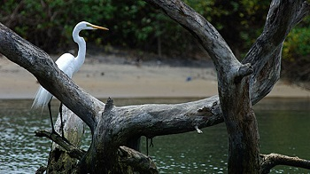
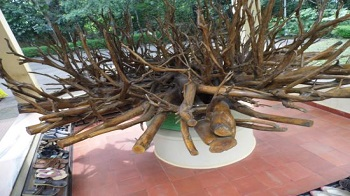
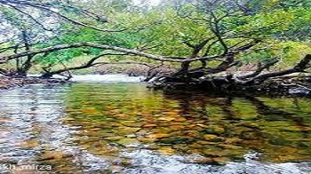

Kadalundi Bird Sanctuary
Spread over a cluster of islands, surrounded by beautiful hillocks lies a bird watchers' planet, the Kadalundi Bird Sanctuary. Located in Kozhikode, the sanctuary greets its visitors with freshwaters of Kadalundi River. This virgin land is home to 60 migratory and more than hundred native birds. Wildlife enthusiasts and bird lovers visit the place to capture even the minutest movements of the birds in their cameras.

Nilambur Teak Museum
Established in 1994, Nilambur Teak Museum is the first teak museum in the country. They have a collection of information in the form of articles and comprehensive documents that also mention the historic and artistic value of the wood.

Nedumkayam
Nedumkayam is a rainforest and a part of the Nilgiri Bioreserve. It is mostly known for its dense forestation with several species of flora and fauna including some rare and endangered species and several mesmerising water bodies making it is a perfect attraction for nature lovers. The region has a charming little guest house from where one can observe and capture photographs of the surrounding forest.